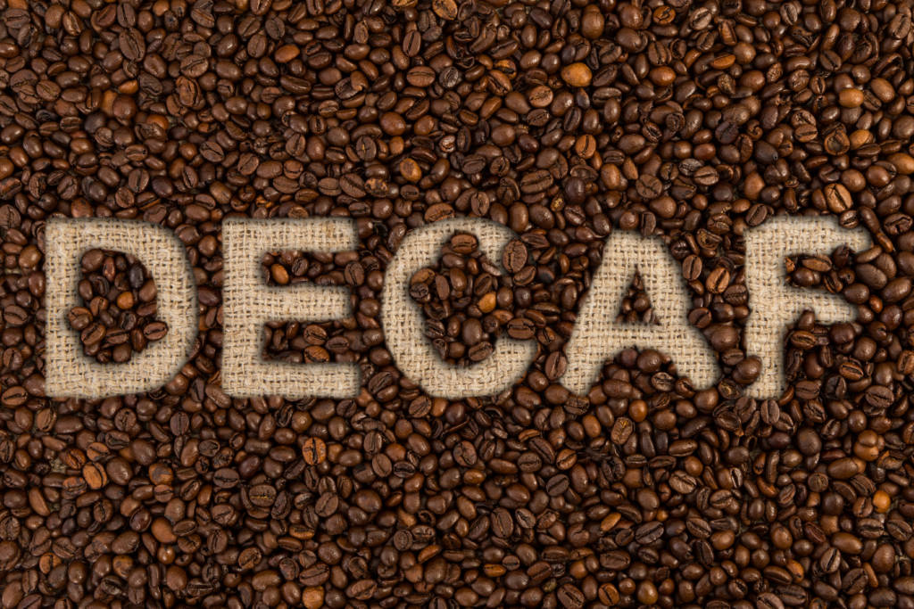

Common Grounds
Menu
Info/FAQ
Reviews
"What's My Coffee" Quiz!
Find Your Coffee!
Do you prefer spicy or citrus flavours?
Do you prefer berry flavours or dark chocolate?
Which smell is your favourite? (Lemon, Chocolate, Peaches, Flowers)
Do you prefer a decaf, strong or light coffee?

Find Your Coffee!
Coffee Identified!!
For More Information See Our Menu!